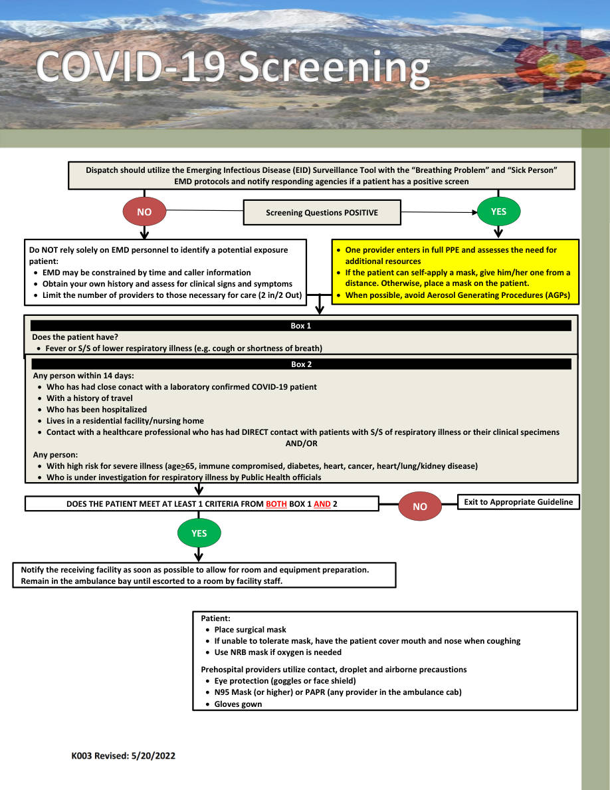
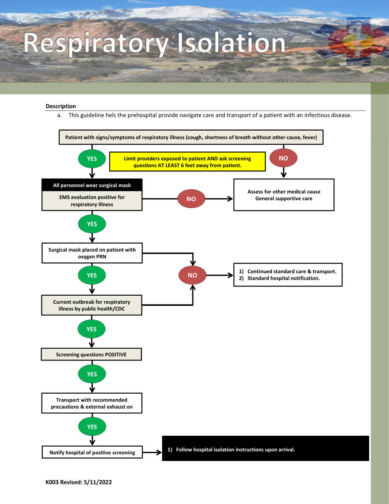
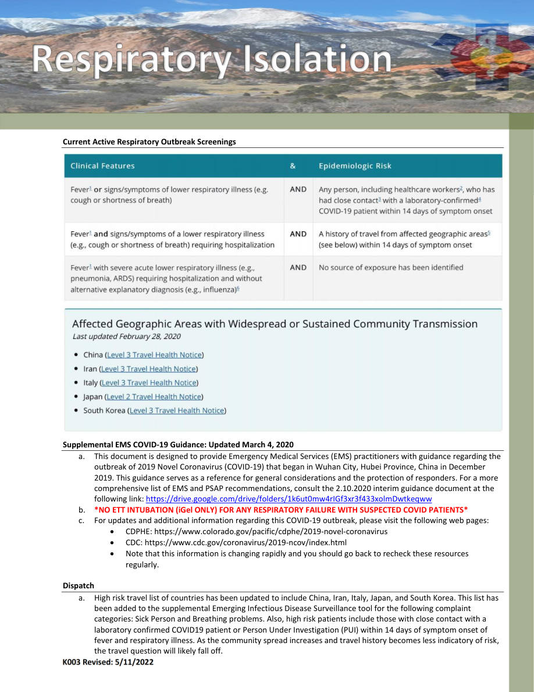
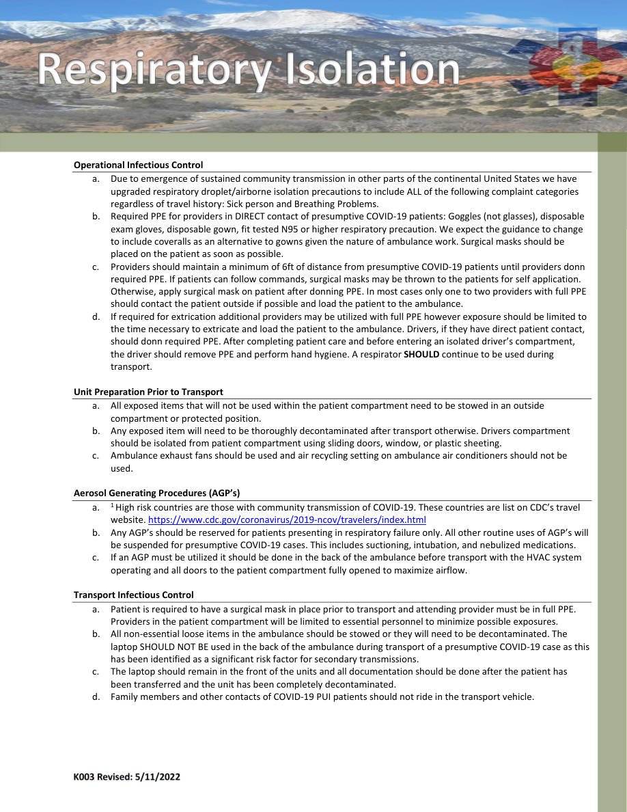
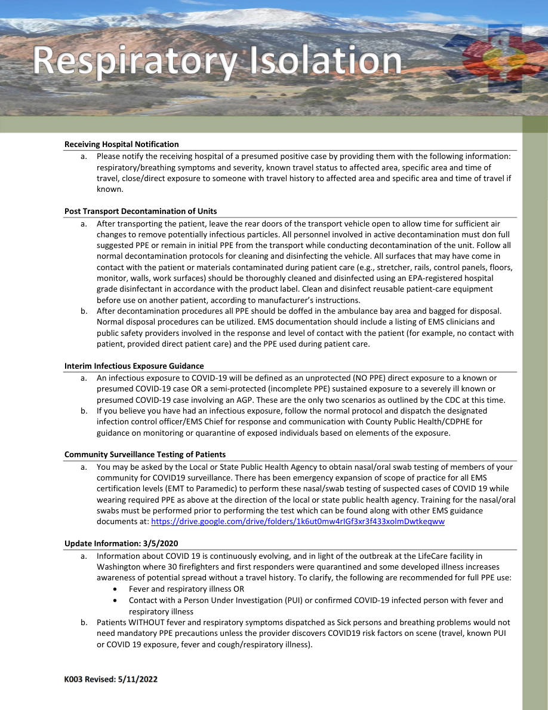

K003 — YES
Infectious Disease • Pages 161-165
Use the scanned pages to see the official tables/charts/algorithms. The extracted text is there for copy/paste and searchability.
Extracted text (page 161)
K003 Revised: 5/20/2022 Dispatch should utilize the Emerging Infectious Disease (EID) Surveillance Tool with the “Breathing Problem” and “Sick Person” EMD protocols and notify responding agencies if a patient has a positive screen YES NO NO Do NOT rely solely on EMD personnel to identify a potential exposure patient: EMD may be constrained by time and caller information Obtain your own history and assess for clinical signs and symptoms Limit the number of providers to those necessary for care (2 in/2 Out) DOES THE PATIENT MEET AT LEAST 1 CRITERIA FROM BOTH BOX 1 AND 2 YES Screening Questions POSITIVE Exit to Appropriate Guideline Box 1 Does the patient have? Fever or S/S of lower respiratory illness (e.g. cough or shortness of breath) One provider enters in full PPE and assesses the need for additional resources If the patient can self‐apply a mask, give him/her one from a distance. Otherwise, place a mask on the patient. When possible, avoid Aerosol Generating Procedures (AGPs) Box 2 Any person within 14 days: Who has had close conact with a laboratory confirmed COVID‐19 patient With a history of travel Who has been hospitalized Lives in a residential facility/nursing home Contact with a healthcare professional who has had DIRECT contact with patients with S/S of respiratory illness or their clinical specimens AND/OR Any person: With high risk for severe illness (age>65, immune compromised, diabetes, heart, cancer, heart/lung/kidney disease) Who is under investigation for respiratory illness by Public Health officials Patient: Place surgical mask If unable to tolerate mask, have the patient cover mouth and nose when coughing Use NRB mask if oxygen is needed Prehospital providers utilize contact, droplet and airborne precaustions Eye protection (goggles or face shield) N95 Mask (or higher) or PAPR (any provider in the ambulance cab) Gloves gown Notify the receiving facility as soon as possible to allow for room and equipment preparation. Remain in the ambulance bay until escorted to a room by facility staff.
Extracted text (page 162)
K003 Revised: 5/11/2022 Description a. This guideline hels the prehospital provide navigate care and transport of a patient with an infectious disease. Patient with signs/symptoms of respiratory illness (cough, shortness of breath without other cause, fever) YES NO Assess for other medical cause General supportive care All personnel wear surgical mask EMS evaluation positive for respiratory illness YES NO YES Surgical mask placed on patient with oxygen PRN Notify hospital of positive screening 1) Follow hospital isolation instructions upon arrival. YES Current outbreak for respiratory illness by public health/CDC Transport with recommended precautions & external exhaust on YES Screening questions POSITIVE YES NO 1) Continued standard care & transport. 2) Standard hospital notification. Limit providers exposed to patient AND ask screening questions AT LEAST 6 feet away from patient.
Extracted text (page 163)
K003 Revised: 5/11/2022 Current Active Respiratory Outbreak Screenings Supplemental EMS COVID‐19 Guidance: Updated March 4, 2020 a. This document is designed to provide Emergency Medical Services (EMS) practitioners with guidance regarding the outbreak of 2019 Novel Coronavirus (COVID‐19) that began in Wuhan City, Hubei Province, China in December 2019. This guidance serves as a reference for general considerations and the protection of responders. For a more comprehensive list of EMS and PSAP recommendations, consult the 2.10.2020 interim guidance document at the following link: https://drive.google.com/drive/folders/1k6ut0mw4rIGf3xr3f433xolmDwtkeqww b. *NO ETT INTUBATION (iGel ONLY) FOR ANY RESPIRATORY FAILURE WITH SUSPECTED COVID PATIENTS* c. For updates and additional information regarding this COVID‐19 outbreak, please visit the following web pages: CDPHE: https://www.colorado.gov/pacific/cdphe/2019‐novel‐coronavirus CDC: https://www.cdc.gov/coronavirus/2019‐ncov/index.html Note that this information is changing rapidly and you should go back to recheck these resources regularly. Dispatch a. High risk travel list of countries has been updated to include China, Iran, Italy, Japan, and South Korea. This list has been added to the supplemental Emerging Infectious Disease Surveillance tool for the following complaint categories: Sick Person and Breathing problems. Also, high risk patients include those with close contact with a laboratory confirmed COVID19 patient or Person Under Investigation (PUI) within 14 days of symptom onset of fever and respiratory illness. As the community spread increases and travel history becomes less indicatory of risk, the travel question will likely fall off.
Extracted text (page 164)
K003 Revised: 5/11/2022 Operational Infectious Control a. Due to emergence of sustained community transmission in other parts of the continental United States we have upgraded respiratory droplet/airborne isolation precautions to include ALL of the following complaint categories regardless of travel history: Sick person and Breathing Problems. b. Required PPE for providers in DIRECT contact of presumptive COVID‐19 patients: Goggles (not glasses), disposable exam gloves, disposable gown, fit tested N95 or higher respiratory precaution. We expect the guidance to change to include coveralls as an alternative to gowns given the nature of ambulance work. Surgical masks should be placed on the patient as soon as possible. c. Providers should maintain a minimum of 6ft of distance from presumptive COVID‐19 patients until providers donn required PPE. If patients can follow commands, surgical masks may be thrown to the patients for self application. Otherwise, apply surgical mask on patient after donning PPE. In most cases only one to two providers with full PPE should contact the patient outside if possible and load the patient to the ambulance. d. If required for extrication additional providers may be utilized with full PPE however exposure should be limited to the time necessary to extricate and load the patient to the ambulance. Drivers, if they have direct patient contact, should donn required PPE. After completing patient care and before entering an isolated driver’s compartment, the driver should remove PPE and perform hand hygiene. A respirator SHOULD continue to be used during transport. Unit Preparation Prior to Transport a. All exposed items that will not be used within the patient compartment need to be stowed in an outside compartment or protected position. b. Any exposed item will need to be thoroughly decontaminated after transport otherwise. Drivers compartment should be isolated from patient compartment using sliding doors, window, or plastic sheeting. c. Ambulance exhaust fans should be used and air recycling setting on ambulance air conditioners should not be used. Aerosol Generating Procedures (AGP’s) a. 1 High risk countries are those with community transmission of COVID‐19. These countries are list on CDC’s travel website. https://www.cdc.gov/coronavirus/2019‐ncov/travelers/index.html b. Any AGP’s should be reserved for patients presenting in respiratory failure only. All other routine uses of AGP’s will be suspended for presumptive COVID‐19 cases. This includes suctioning, intubation, and nebulized medications. c. If an AGP must be utilized it should be done in the back of the ambulance before transport with the HVAC system operating and all doors to the patient compartment fully opened to maximize airflow. Transport Infectious Control a. Patient is required to have a surgical mask in place prior to transport and attending provider must be in full PPE. Providers in the patient compartment will be limited to essential personnel to minimize possible exposures. b. All non‐essential loose items in the ambulance should be stowed or they will need to be decontaminated. The laptop SHOULD NOT BE used in the back of the ambulance during transport of a presumptive COVID‐19 case as this has been identified as a significant risk factor for secondary transmissions. c. The laptop should remain in the front of the units and all documentation should be done after the patient has been transferred and the unit has been completely decontaminated. d. Family members and other contacts of COVID‐19 PUI patients should not ride in the transport vehicle.
Extracted text (page 165)
K003 Revised: 5/11/2022 Receiving Hospital Notification a. Please notify the receiving hospital of a presumed positive case by providing them with the following information: respiratory/breathing symptoms and severity, known travel status to affected area, specific area and time of travel, close/direct exposure to someone with travel history to affected area and specific area and time of travel if known. Post Transport Decontamination of Units a. After transporting the patient, leave the rear doors of the transport vehicle open to allow time for sufficient air changes to remove potentially infectious particles. All personnel involved in active decontamination must don full suggested PPE or remain in initial PPE from the transport while conducting decontamination of the unit. Follow all normal decontamination protocols for cleaning and disinfecting the vehicle. All surfaces that may have come in contact with the patient or materials contaminated during patient care (e.g., stretcher, rails, control panels, floors, monitor, walls, work surfaces) should be thoroughly cleaned and disinfected using an EPA‐registered hospital grade disinfectant in accordance with the product label. Clean and disinfect reusable patient‐care equipment before use on another patient, according to manufacturer’s instructions. b. After decontamination procedures all PPE should be doffed in the ambulance bay area and bagged for disposal. Normal disposal procedures can be utilized. EMS documentation should include a listing of EMS clinicians and public safety providers involved in the response and level of contact with the patient (for example, no contact with patient, provided direct patient care) and the PPE used during patient care. Interim Infectious Exposure Guidance a. An infectious exposure to COVID‐19 will be defined as an unprotected (NO PPE) direct exposure to a known or presumed COVID‐19 case OR a semi‐protected (incomplete PPE) sustained exposure to a severely ill known or presumed COVID‐19 case involving an AGP. These are the only two scenarios as outlined by the CDC at this time. b. If you believe you have had an infectious exposure, follow the normal protocol and dispatch the designated infection control officer/EMS Chief for response and communication with County Public Health/CDPHE for guidance on monitoring or quarantine of exposed individuals based on elements of the exposure. Community Surveillance Testing of Patients a. You may be asked by the Local or State Public Health Agency to obtain nasal/oral swab testing of members of your community for COVID19 surveillance. There has been emergency expansion of scope of practice for all EMS certification levels (EMT to Paramedic) to perform these nasal/swab testing of suspected cases of COVID 19 while wearing required PPE as above at the direction of the local or state public health agency. Training for the nasal/oral swabs must be performed prior to performing the test which can be found along with other EMS guidance documents at: https://drive.google.com/drive/folders/1k6ut0mw4rIGf3xr3f433xolmDwtkeqww Update Information: 3/5/2020 a. Information about COVID 19 is continuously evolving, and in light of the outbreak at the LifeCare facility in Washington where 30 firefighters and first responders were quarantined and some developed illness increases awareness of potential spread without a travel history. To clarify, the following are recommended for full PPE use: Fever and respiratory illness OR Contact with a Person Under Investigation (PUI) or confirmed COVID‐19 infected person with fever and respiratory illness b. Patients WITHOUT fever and respiratory symptoms dispatched as Sick persons and breathing problems would not need mandatory PPE precautions unless the provider discovers COVID19 risk factors on scene (travel, known PUI or COVID 19 exposure, fever and cough/respiratory illness).
Scanned pages (tables/charts preserved)
Page 161 scan
Page 162 scan
Page 163 scan
Page 164 scan
Page 165 scan
